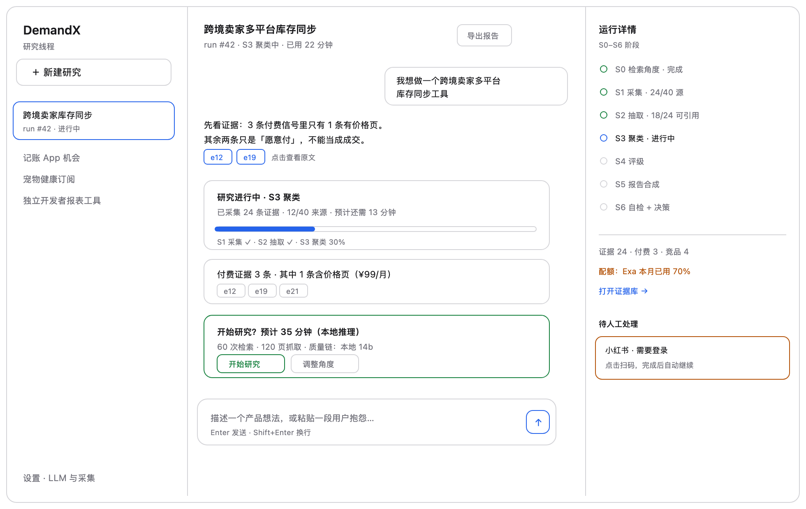
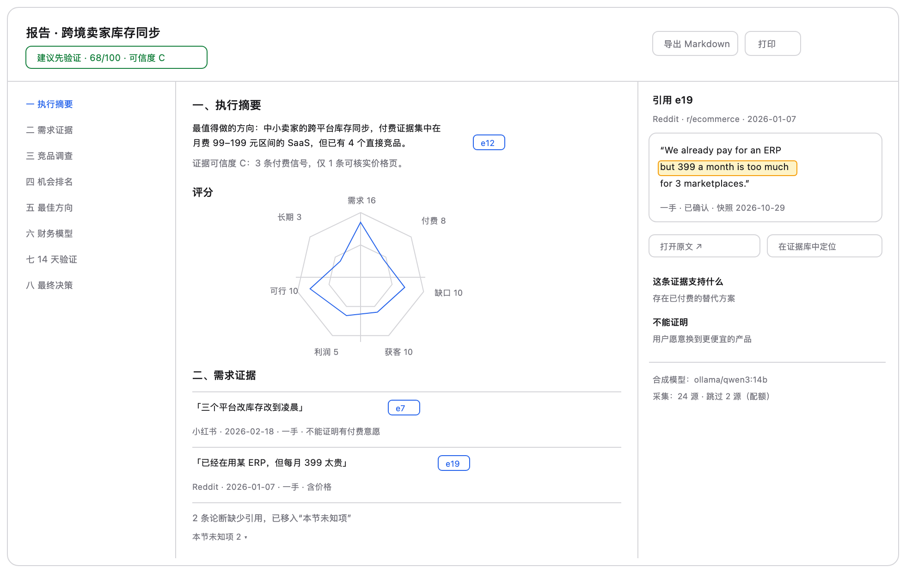
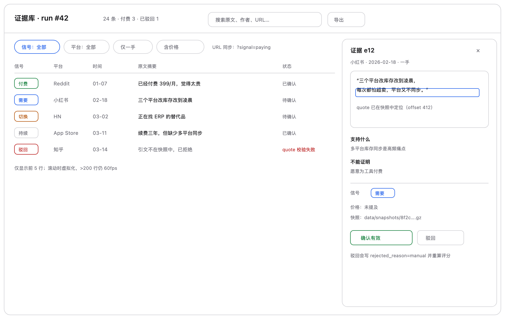
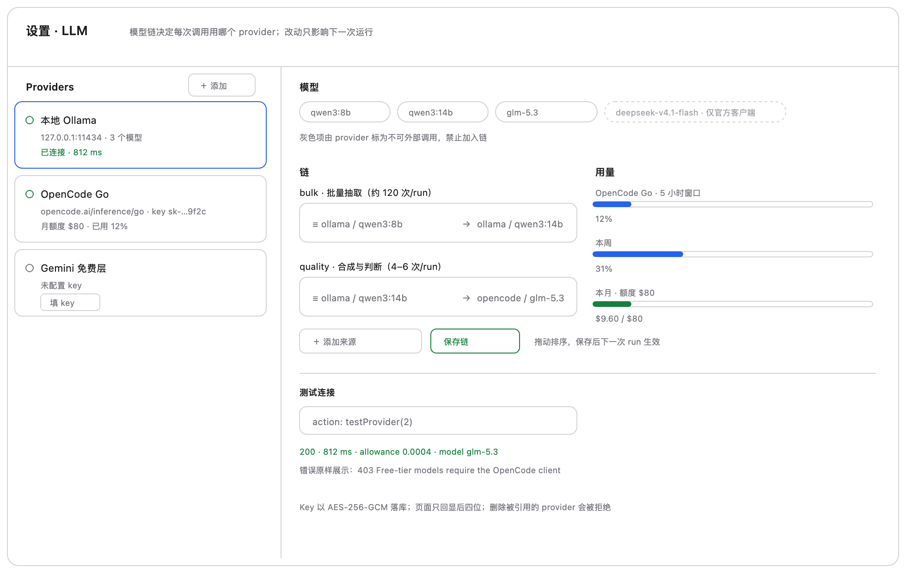
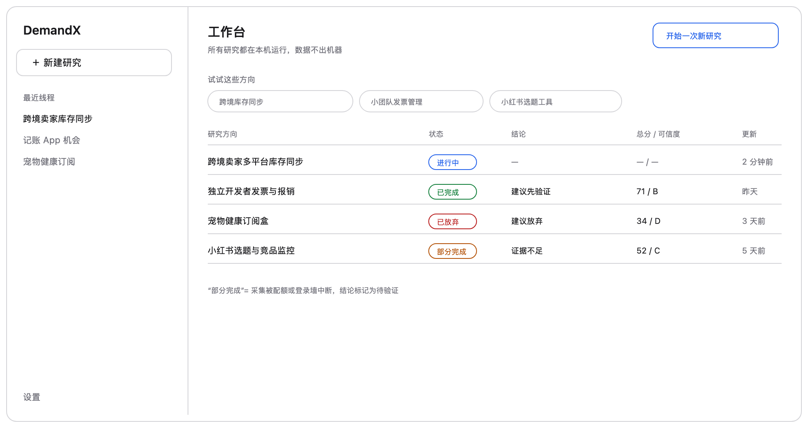
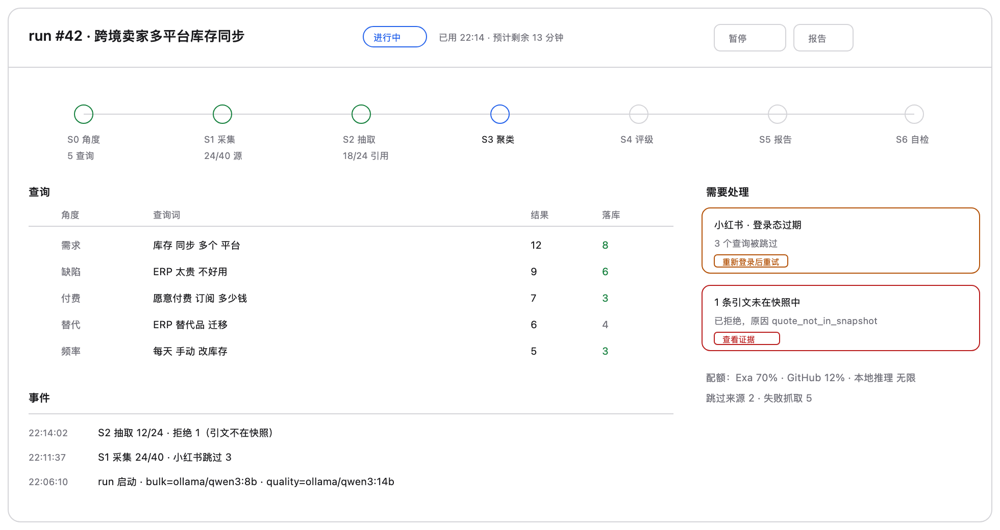
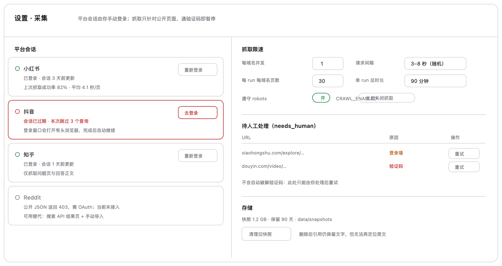

7 个页面，2 倍分辨率 PNG（1960px 宽）。同名 SVG 为矢量源文件，可直接拖入 Figma 编辑。
三栏常驻：线程 240 / 对话自适应 / 运行详情 320。审批卡在对话流内，证据 chip 可点开右栏。

目录 200 / 正文 max 760 / 引用 320。无引用论断灰标并归入“本节未知项”。

筛选写入 URL；右侧抽屉展示原文、quote 定位、支持什么 / 不能证明什么。

Providers / 模型 / 双链拖拽 / 用量四块；Key 只回显后四位。

只做“继续上次”和“开新研究”，不做仪表盘。

七阶段进度条 + 查询明细 + 异常队列；暂停只停后续请求。

平台会话与限速分离；登录墙/验证码进入 needs_human 队列，不自动破解。
